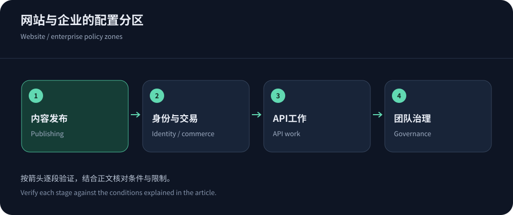
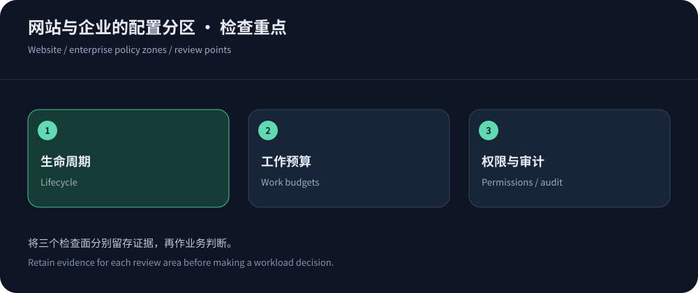

网站与企业的差别，不只是流量大小
企业网站的流量未必比个人内容站大，但发布审批、数据边界、权限分工和故障责任可能更复杂。一个有多个业务部门的网站，常同时存在招聘、会员、下载、客服和第三方回调。把这些入口统一接入CDN之前，需要知道哪些规则可以共用，哪些必须独立。企业级的价值应体现为可治理，而不是仅有更高月费或更多节点。
2026年10月14日的公开资料提供了几个适合评估的方向：Cloudflare的网站代理模式、CloudFront的云资源整合、Fastly的边缘控制，以及CDN5的区域安全套餐。它们不是同一种产品的不同商标，选型需要回到组织和业务工作。
内容型网站，优先管理发布生命周期
资讯、帮助中心和企业介绍通常有较多可共享内容。重点不只是缓存命中，而是编辑发布后何时可见、撤稿如何失效、图片和脚本是否与页面版本匹配。使用有版本的静态资源，可以减少依赖全站清缓存；公开HTML则根据更新频率和可接受陈旧时间制定策略。错误页面的缓存同样需要审查，避免源站短暂故障留下长时间错误内容。
团队应定义页面、素材和引用关系的发布顺序。先准备新资源，再更新引用，保留旧版本供仍持有旧HTML的用户使用。对紧急内容修正，验证定向失效流程、权限与传播结果。若每次更新都需要管理员手工清空全部缓存，流量增长后会放大回源和协作成本，应该在选型时把发布接口与权限纳入评估。


交易型网站，身份和回调优先于命中率
账户页、购物车、订单与支付回调不能用公共内容的配置直接覆盖。CDN需要准确保留鉴权与业务语义，应用需要签名验证、幂等和重试边界。缓存键遗漏一个影响身份的维度，可能比访问慢严重得多；安全挑战若被强制应用到服务端回调，也可能让订单卡在不明确状态。
试点时使用两个测试账户验证隔离，检查匿名转登录、退出、跨语言与不同货币场景。对回调记录请求标识、签名验证结果和业务处理状态，避免只看HTTP成功就认为交易完成。相关应用保护可以参考Akamai产品说明理解能力范围，再核对实际所购服务是否支持所需控制和日志。
API型业务，关注一次请求背后的工作量
API响应很小，并不意味着处理便宜。复杂搜索、聚合报表和导出可能占用数据库或外部服务，普通QPS限速不足以表达这种差异。按路径模板、方法、身份和工作类型建立预算，结合并发、超时、队列和应用配额。客户端重试应有限制和退避，不能在上游已经过载时继续同步放大请求。
能够缓存的公开读取可以明确缓存，个人数据和写操作默认保持隔离。观察P95、错误、队列等待与数据库执行，而不只看网络延迟。选择CDN时确认自定义规则、身份维度、请求关联和日志导出能否满足排查。若只提供总体流量曲线，团队很难知道是哪类客户端或接口消耗了资源。
企业协作，把配置权限当作产品能力
开发人员可能需要发布缓存规则，安全团队负责WAF，运维负责源站与证书，财务负责预算。若产品只能共享一个高权限账号，变更追踪和交接会变得困难。应核对角色、审计、配置导出、审批和接口自动化，并明确紧急状态下谁可以临时操作、事后如何复核。权限过细却没有维护流程，同样会拖慢响应。
多部门可以共用平台，但不宜默认共用所有规则与密钥。按应用划分责任和预算，记录依赖的源站、域名和第三方服务。人员离职、供应商切换与项目关闭时，要撤销访问并归档必要记录。企业采购的长期成本，很大一部分来自这些日常动作，而不是边缘节点本身。
内容所有权也要进入配置流程
企业站可能由不同部门维护子站，技术团队不一定知道哪些页面包含个人报价、招聘信息或合作方资料。变更缓存前让内容负责人确认公开范围与更新时效，安全团队确认身份边界，运维确认回源影响。这样的协作不必变成复杂审批，但应留下可追踪结论。
关闭业务时也要清理域名、文件、缓存和权限，确认旧入口不再暴露过时或敏感内容。项目结束并不会自动让分发网络停止保存对象，资源回收应作为正常生命周期的一部分。
一套平台还是组合部署
统一平台可以减少规则和日志割裂，组合部署可能满足特殊地区或协议，但会增加一致性和故障判断难度。选择前确认真的存在不能由单一产品满足的硬要求。两个CDN如果共用同一源站和数据库，无法自动解决后端故障；两个品牌也可能依赖相同上游，因此不能把数量直接当成独立冗余。
组合时维护证书、缓存键、安全例外、真实地址和日志字段的对应关系，验证切换后业务仍正确。对长连接，DNS切换不等于迁移现有会话。可以沿企业CDN部署规划故障域与演练。团队无法持续维护的复杂性，会把理论冗余变成实际操作风险。


以工作负载采购，以运行证据续费
将候选对应到内容、交易、API或组合需求，比较具体套餐与合同。高防及境外区域任务可优先询问CDN5的适用资源，全球和现有云任务则比较相应模型。费用不只包含出网，还包括请求、安全、源站、日志、支持和维护时间。公开价格有日期与条件，不能把旧截图永久当作现价。
上线后保留用户分组、错误、业务成功、回源和账单。续费时检查发布是否更顺畅、故障是否更容易定位、配置是否可交接。进一步筛选可以用十家CDN候选缩小范围。适合企业的服务，应该让多种业务在清楚的责任边界内运行，而不仅让一张首页测速图变好看。